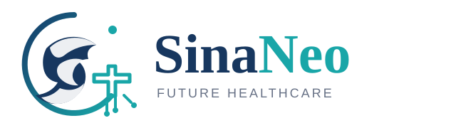

SinaNeo شرححال را ساختاریافته میگیرد، موارد اورژانسی را از مسیر عادی جدا میکند، قصد واقعی بیمار را میسنجد، مدارک موجود را مرتب میکند و یک خلاصه قابل بررسی برای پزشک میسازد. تصمیم نهایی همیشه با پزشک است.
بخش اصلی برای همه رشتهها ثابت است؛ فقط سؤالها و مدارک هر تخصص تغییر میکنند.
مشکل اصلی، سابقه، دارو، سؤال بیمار و اطلاعات پایه به شکل مرتب جمع میشود.
اورژانس از مسیر عادی جدا میشود و سؤال عمومی از مشاوره واقعی تفکیک میشود.
فقط مدارکی که بیمار از قبل دارد ثبت میشود؛ سیستم آزمایش جدید تجویز نمیکند.
پزشک تأیید، اصلاح، درخواست مدرک، ویزیت تصویری، حضوری یا ارجاع فوری را انتخاب میکند.
هر مرحله کوتاه است و فقط اطلاعات لازم را میپرسد.
پروندههای ساختهشده در دمو همین مرورگر در اینجا نمایش داده میشوند.
هدف عضویت این است که متخصص قبل از صرف وقت، پروندهای مرتبتر و بیمار هدفمندتری ببیند.
در این نسخه پرداخت فعال نیست. ابتدا ارزش واقعی سیستم را با چند متخصص اهواز اندازه میگیریم و بعد قیمت اشتراک را قفل میکنیم.